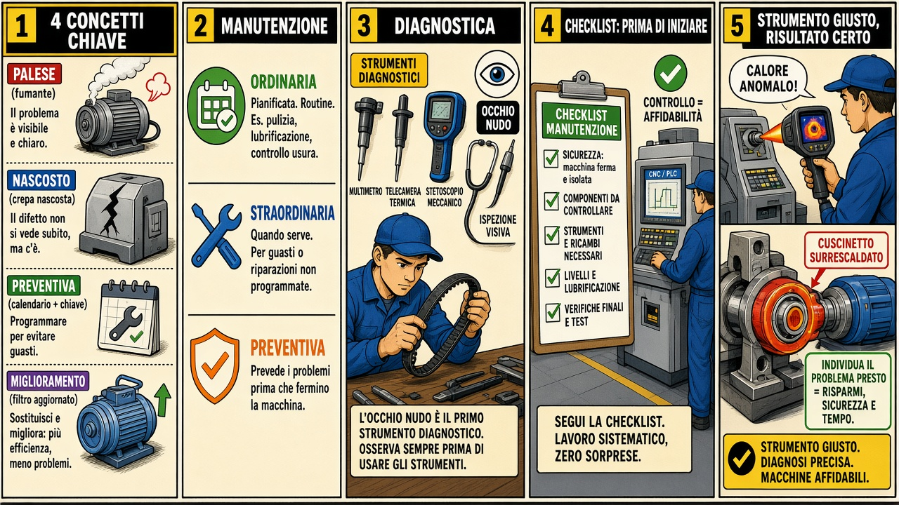

Quarta professionale · Tecnologie di installazione e manutenzione
Guasti e manutenzione preventiva
Guasti, ordinaria/straordinaria/preventiva, strumenti di diagnostica e checklist — scheda, fumetto in 5 vignette e gioco.
Prevenire è meglio che fermare tutto.
